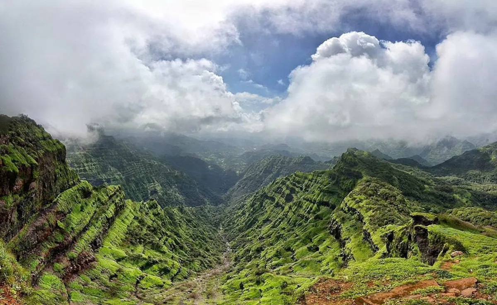
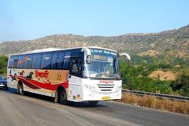

Mahabaleshwar is located on the mountainous Sahyadri range of the Western Ghats that run North to south along the western coast of India. The coordinates of the town are 17.9250°N 73.6575°E. Mahabaleshwar is a vast plateau measuring 150 km2 (58 sq mi), bound by valleys on all sides. It reaches a height of 1,439 m (4,721 ft) at its highest peak above sea level, known as Wilson/Sunrise Point. The town is about 122 km (76 mi) southwest of Pune and 285 km (177 mi) from Mumbai. Mahabaleshwar comprises three villages: Malcolm Peth, Old "Kshetra" Mahabaleshwar, and part of the Shindola village. The Mahabaleshwar region is the source of the Krishna River that flows east across Maharashtra, Karnataka, Telangana, and Andhra Pradesh towards the Bay of Bengal. Three tributaries of Krishna, namely Koyna, Venna (Veni) and Gayatri, also have their source in Mahabaleshwar region. A fourth river, the Savitri, also has its source in the region, but flows Westward via Mahad to the Arabian Sea
Legend says that a Yadava ruler from 13th century built a small temple and water tank at the source of the river Krishna.The Valley of Jawali, the area around Mahabaleshwar, was ruled by the More (clan) who were vassals of the Adilshahi sultanate of Bijapur. In 1656, the founder of Maratha empire, Chhatrapati Shivaji, killed the then ruler of Valley of Javali, Chandrarao More, and seized the area. Around that time Shivaji also built a hill fort near Mahabaleshwar called Pratapgad fort
In 1819, after the demise of the Maratha empire, the British ceded the hills around Mahabaleshwar to the vassal state of Satara. Colonel Lodwick (Later General Sir Lodwick) after climbing the mountains near Mahabaleshwar, recommended the place as a sanatorium for the British forces to governor Sir John Malcolm of Bombay presidency. The Raja of Satara was granted other villages in exchange for the British getting Mahabaleshwar in 1828. In old records Mahabaleshwar was even called Malcolm Peth after the governor.
Mahabaleshwar is a popular tourist destination in Maharashtra. Attractions include many hill side look out points with views of surrounding hills, valleys and forests such as Bombay Point, Arthur Seat, Kates Point, Lodwick-Wilson Point, and Elphinston Point. Wilson Point is the only location in Mahabaleshwar where both the sunrise and sunset can be seen. The town also has a man-made lake dating back to British era called Venna Lake. The lake is a popular place for boating. It is surrounded by a market and food stalls that are popular with the tourists.Other attractions include the Lingmala waterfall. Old Mahabaleshwar is a place of pilgrimage with its Mahadeo temple. The temple is the source of the five rivers Krishna, Koyna, Venna, Savitri and Gayatri. Being a relatively cool place, many temperate region crops such as strawberries, raspberries, and mulberries have been grown in Mahabaleshwar and surrounding hills. Principal amongst these crops is Strawberries. Strawberry plantations, and the produce they offer are also a popular tourist activity. The Mahabaleshwar strawberry was granted the geographical indication (GI) tag in 2010. As a popular tourist destination, Mahabaleshwar has hotels and accommodation to suit different budgets
Mahabaleshwar is a popular tourist destination in Maharashtra. Attractions include many hill side look out points with views of surrounding hills, valleys and forests such as Bombay Point, Arthur Seat, Kates Point, Lodwick-Wilson Point, and Elphinston Point. Wilson Point is the only location in Mahabaleshwar where both the sunrise and sunset can be seen. The town also has a man-made lake dating back to British era called Venna Lake. The lake is a popular place for boating. It is surrounded by a market and food stalls that are popular with the tourists. Other attractions include the Lingmala waterfall. Old Mahabaleshwar is a place of pilgrimage with its Mahadeo temple. The temple is the source of the five rivers Krishna, Koyna, Venna, Savitri and Gayatri. Being a relatively cool place, many temperate region crops such as strawberries, raspberries, and mulberries have been grown in Mahabaleshwar and surrounding hills. Principal amongst these crops is Strawberries. Strawberry plantations, and the produce they offer are also a popular tourist activity. The Mahabaleshwar strawberry was granted the geographical indication (GI) tag in 2010.[9] As a popular tourist destination, Mahabaleshwar has hotels and accommodation to suit different budgets
A popular place to visit is the historic fort of Pratapgad built by Chatrapati Shivaji. It is the site of the encounter between Shivaji Maharaj and Bijapur general, Afzal Khan, where the latter was defeated and killed by Chhatrapati Shivaji Maharaj. There are small shops, restaurants and a handicrafts store. Many schools also arrange educational trips to the fort. The fort is also on many trekking routes of the area